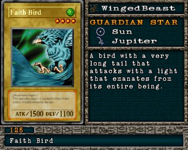

#125 · Monstro
Faith Bird
ATK1500
DEF1100
Nível4
TipoBesta Alada
AtributoWind
Guardian StarsSol / Júpiter
Senha75582395
Star Chips120
Quem dropa no Mod 13
| Duelista | Rank | Chance | Média | |
|---|---|---|---|---|
| B/C/D | 5,86% 120/2048 | 1 em 17 duelos | ||
| S/A-POW | 4,59% 94/2048 | 1 em 22 duelos | ||
| B/C/D | 4,10% 84/2048 | 1 em 24 duelos | ||
| S/A-POW | 3,66% 75/2048 | 1 em 27 duelos | ||
| S/A-TEC | 3,12% 64/2048 | 1 em 32 duelos | ||
| S/A-POW | 1,76% 36/2048 | 1 em 57 duelos | ||
| S/A-POW | 1,27% 26/2048 | 1 em 79 duelos | ||
| B/C/D | 1,27% 26/2048 | 1 em 79 duelos | ||
| B/C/D | 1,27% 26/2048 | 1 em 79 duelos | ||
| B/C/D | 1,17% 24/2048 | 1 em 85 duelos | ||
| S/A-POW | 1,07% 22/2048 | 1 em 93 duelos | ||
| S/A-POW | 1,07% 22/2048 | 1 em 93 duelos | ||
| B/C/D | 1,07% 22/2048 | 1 em 93 duelos | ||
| S/A-POW | 1,07% 22/2048 | 1 em 93 duelos | ||
| S/A-POW | 1,03% 21/2048 | 1 em 98 duelos | ||
| S/A-TEC | 1,03% 21/2048 | 1 em 98 duelos | ||
| S/A-TEC | 0,98% 20/2048 | 1 em 102 duelos | ||
| S/A-TEC | 0,98% 20/2048 | 1 em 102 duelos |
Quem dropa no jogo original
| Duelista | Rank | Chance | Média | |
|---|---|---|---|---|
| S/A-TEC | 6,45% 132/2048 | 1 em 16 duelos | ||
| B/C/D | 5,86% 120/2048 | 1 em 17 duelos | ||
| S/A-POW | 4,59% 94/2048 | 1 em 22 duelos | ||
| B/C/D | 4,10% 84/2048 | 1 em 24 duelos | ||
| S/A-POW | 3,66% 75/2048 | 1 em 27 duelos | ||
| S/A-TEC | 3,12% 64/2048 | 1 em 32 duelos | ||
| S/A-POW | 1,76% 36/2048 | 1 em 57 duelos | ||
| S/A-POW | 1,27% 26/2048 | 1 em 79 duelos | ||
| B/C/D | 1,27% 26/2048 | 1 em 79 duelos | ||
| B/C/D | 1,27% 26/2048 | 1 em 79 duelos | ||
| B/C/D | 1,17% 24/2048 | 1 em 85 duelos | ||
| S/A-POW | 1,07% 22/2048 | 1 em 93 duelos | ||
| S/A-POW | 1,07% 22/2048 | 1 em 93 duelos | ||
| B/C/D | 1,07% 22/2048 | 1 em 93 duelos | ||
| S/A-POW | 1,07% 22/2048 | 1 em 93 duelos | ||
| S/A-POW | 1,03% 21/2048 | 1 em 98 duelos | ||
| S/A-TEC | 1,03% 21/2048 | 1 em 98 duelos | ||
| S/A-TEC | 0,98% 20/2048 | 1 em 102 duelos | ||
| S/A-TEC | 0,98% 20/2048 | 1 em 102 duelos |
A chance vale por duelo vencido com o rank indicado. "1 em N" é a média de duelos para conseguir a carta. S/A-POW = vitória por força; S/A-TEC = vitória técnica; B/C/D = ranks baixos.